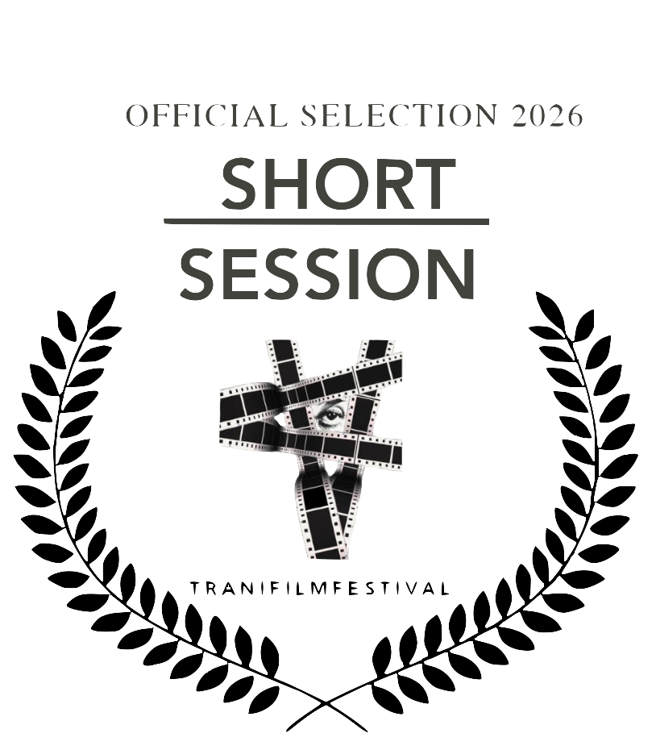

01 / 08
01 / Short Film
The Landlord is Late on His Rent
Produced 2026 - Released 2027 - Directed by Alexander Tsankov
Locations: Brooklyn & Manhattan (12min)
Set in contemporary New York. Grisha, a young and rising Eastern European mobster, attempts to reconcile his deteriorating marriage and infertility with his sense of masculinity.
Over a tense and expansive lunch with a landlord he is extorting, he pieces together that his wife has been cheating with the landlord’s own son. The film builds towards Grisha's realization, his reconstruction of the betrayal, and his explosive reaction to it.

Official Selection 2026 Trani Film Festival (Italy)